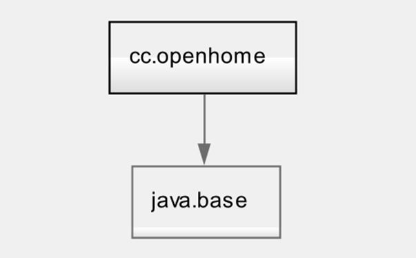
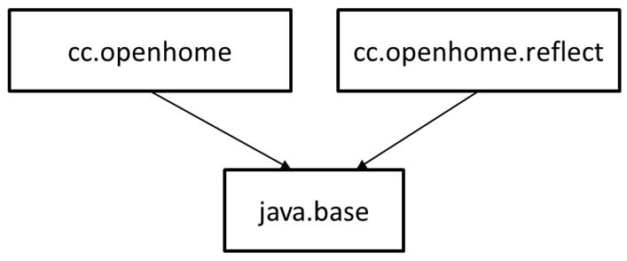
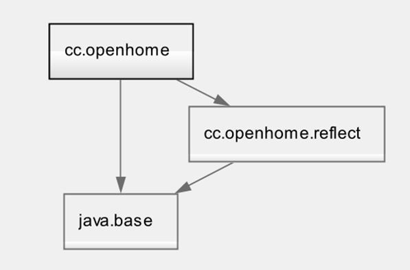
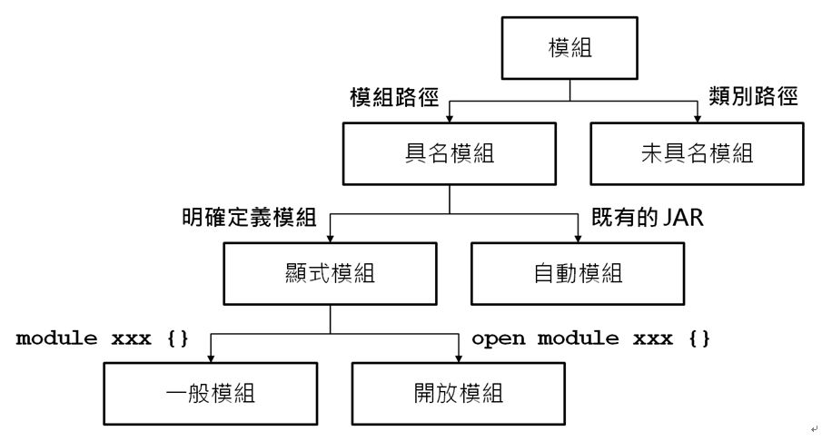

模組與反射
September 28, 2022若 a 模組 requires 了 b 模組，那 a 模組依賴在 b 模組，a 模組可以讀取 b 模組，或說 a 模組對 b 模組是可讀取的（readable），有讀取能力不代表有存取能力，b 模組還得 exports 套件，a 模組對 b 模組才有存取能力，也就是可以操作公開的類別、方法或值域。
那麼反射呢？對於 JDK8 以前，就算開發者不願意，只要程式庫的使用者運用反射，就可以訪問類別定義的成員，這包括了公開、受保護與私有成員，事實上，在 Java 的生態圈中，有不少程式庫或框架，都依賴在這種深層反射（Deep reflection）機制上運作。
然而 JDK9 以後的模組是為了強封裝，若反射機制依舊可以這般自由，那麼模組就失去了強封裝的意義，然而，也必須考慮現存程式庫或框架依賴於深層反射的現況，否則這些程式庫或框架將不會考慮遷移至 JDK9 以後的平台。
就結論而言，模組的設計者可以決定是否允許反射，而過去對反射的認識，在應付同一模組中的類別，以及 java.base 的公開對象時還夠，然而，對 java.base 模組做深層反射時就會遇上問題，因為 java.base 預設並不允許深層反射，而在跨模組反射時也會面臨一些問題，因為依賴的模組可能不允許反射某些套件中的 API 了。
接下來為了示範跨模組的反射，會使用 ReflectModule src 裡的程式，逐步瞭解跨模組下對於反射的權限控制。
在 ReflectModule 專案中有 cc.openhome 與 cc.openhome.reflect 兩個模組，如果這兩個模組都會是在模組路徑之中，在 cc.openhome.reflect 模組有 cc.openhome.reflect.Some 類別，原始碼如下所示：
package cc.openhome.reflect;
public class Some {
private String some;
public Some(String some) {
this.some = some;
}
public void doSome() {
System.out.println(some);
}
}
如果你想在 cc.openhome 模組的 cc.openhome.Main 類別，使用 Class.forName 來取得 Some 的 Class 實例，在程式碼的撰寫上可以是：
package cc.openhome;
public class Main {
public static void main(String[] args) throws ClassNotFoundException {
Class clz = Class.forName("cc.openhome.reflect.Some");
}
}
現在運行 Main 的話，你會得到以下會錯誤訊息：
Exception in thread "main" java.lang.ClassNotFoundException: cc.openhome.reflect.Some
at java.base/jdk.internal.loader.BuiltinClassLoader.loadClass(BuiltinClassLoader.java:582)
at java.base/jdk.internal.loader.ClassLoaders$AppClassLoader.loadClass(ClassLoaders.java:185)
at java.base/java.lang.ClassLoader.loadClass(ClassLoader.java:496)
at java.base/java.lang.Class.forName0(Native Method)
at java.base/java.lang.Class.forName(Class.java:292)
at cc.openhome/cc.openhome.Main.main(Main.java:5)
模組圖
為什麼？cc.openhome.reflect 不是在模組路徑之中嗎？因為一個模組在模組路徑之中，只是表示 JVM 可以找到模組描述檔（module-info.class），不代表模組圖（Module graph）中有這個模組，模組圖中不存在的模組，自然就找不到模組中的類別，目前 cc.openhome 模組的模組描述檔沒有撰寫任何設定，因此目前的模組圖如下：

這個模組圖表示，目前包含程式進入點的啟動模組 cc.openhome 是唯一的根模組（Root module），而它依賴在 java.base 模組。
要將模組加入模組圖的方式之一，是在執行 java 指令啟動 JVM 時，使用 --add-modules 引數加入其他模組作為根模組，如果執行 java 指令指定了 --add-modules cc.openhome.reflect，重新執行範例，就不會出現 ClassNotFoundException，這時的模組圖如下：

透過 --add-modules 結合反射機制，可以讓 cc.openhome 模組不依賴在 cc.openhome.reflect 的情況下載入類別，--add-modules 是執行時期調整模組的彈性機制之一（另一方式是透過 require static，之後有機會再介紹）。
另一個將指定模組加入模組圖方式是，就在模組描述檔中加入 requires 設定，也就是〈初探模組〉範例中的方式，現有模組會依賴在 requires 的模組之上，現有模組可以讀取（read）該模組，或稱現在模組對該模組有讀取能力（Readability），例如，在 cc.openhome 模組的 module-info.java 中設定如下：
module cc.openhome {
requires cc.openhome.reflect;
}
如下設定之後，重新執行範例（執行 java 指令不指定 --add-modules cc.openhome.reflect），就不會出現 ClassNotFoundException，這時的模組圖會如下：

現在，如果進一步地，將 cc.openhome.Main 修改如下呢？
package cc.openhome;
import java.lang.reflect.Constructor;
public class Main {
public static void main(String[] args) throws ReflectiveOperationException {
Class clz = Class.forName("cc.openhome.reflect.Some");
Constructor constructor = clz.getDeclaredConstructor(String.class);
}
}
執行程式時並不會發生問題，接著進一步使用 Constructor 的 newInstance 來建立實例：
package cc.openhome;
import java.lang.reflect.Constructor;
public class Main {
public static void main(String[] args) throws ReflectiveOperationException {
Class clz = Class.forName("cc.openhome.reflect.Some");
Constructor constructor = clz.getDeclaredConstructor(String.class);
Object target = constructor.newInstance("Some object");
}
}
執行時就會出現以下的錯誤了：
Exception in thread "main" java.lang.IllegalAccessException: class cc.openhome.Main (in module cc.openhome) cannot access class cc.openhome.reflect.Some (in module cc.openhome.reflect) because module cc.openhome.reflect does not export cc.openhome.reflect to module cc.openhome
at java.base/jdk.internal.reflect.Reflection.newIllegalAccessException(Reflection.java:361)
at java.base/java.lang.reflect.AccessibleObject.checkAccess(AccessibleObject.java:589)
at java.base/java.lang.reflect.Constructor.newInstance(Constructor.java:479)
at cc.openhome/cc.openhome.Main.main(Main.java:6)
exports 套件
為什麼？雖然可以載入類別，也可以取得公開的建構式的 Constructor 實例，然而，若模組能允許其他模組對指定的公開成員進行操作，必須在模組描述檔使用 exports 定義哪些套件中的類別是可以允許此動作，更確切的說法是，指定此模組中哪些套件中的公開成員可以存取（Accessibility），否則的話，就算 public，透過反射也是不能存取的。
因此你必須在 cc.openhome.reflect 模組的 module-info.java 中如下撰寫：
module cc.openhome.reflect {
exports cc.openhome.reflect;
}
就可以允許其他模組在反射時可操作指定的公開成員，例如現在將 cc.openhome.Main 修改如下：
package cc.openhome;
import java.lang.reflect.Constructor;
public class Main {
public static void main(String[] args) throws ReflectiveOperationException {
Class clz = Class.forName("cc.openhome.reflect.Some");
Constructor constructor = clz.getDeclaredConstructor(String.class);
Object target = constructor.newInstance("Some object");
clz.getDeclaredMethod("doSome").invoke(target);
}
}
執行時就可以順利出現底下的結果：
Some object
接著，嘗試來取得私有值域的 Field 實例：
package cc.openhome;
import java.lang.reflect.Constructor;
import java.lang.reflect.Field;
public class Main {
public static void main(String[] args) throws ReflectiveOperationException {
Class clz = Class.forName("cc.openhome.reflect.Some");
Constructor constructor = clz.getDeclaredConstructor(String.class);
Object target = constructor.newInstance("Some object");
clz.getDeclaredMethod("doSome").invoke(target);
Field field = clz.getDeclaredField("some");
}
}
執行時並沒有問題，若是要取得私有值域的值呢？
package cc.openhome;
import static java.lang.System.out;
import java.lang.reflect.Constructor;
import java.lang.reflect.Field;
public class Main {
public static void main(String[] args) throws ReflectiveOperationException {
Class clz = Class.forName("cc.openhome.reflect.Some");
Constructor constructor = clz.getDeclaredConstructor(String.class);
Object target = constructor.newInstance("Some object");
clz.getDeclaredMethod("doSome").invoke(target);
Field field = clz.getDeclaredField("some");
field.setAccessible(true);
out.println(field.get(target));
}
}
執行時就會出現以下的錯誤訊息：
Exception in thread "main" java.lang.reflect.InaccessibleObjectException: Unable to make field private java.lang.String cc.openhome.reflect.Some.some accessible: module cc.openhome.reflect does not "opens cc.openhome.reflect" to module cc.openhome
at java.base/java.lang.reflect.AccessibleObject.checkCanSetAccessible(AccessibleObject.java:337)
at java.base/java.lang.reflect.AccessibleObject.checkCanSetAccessible(AccessibleObject.java:281)
at java.base/java.lang.reflect.Field.checkCanSetAccessible(Field.java:176)
at java.base/java.lang.reflect.Field.setAccessible(Field.java:170)
at cc.openhome/cc.openhome.Main.main(Main.java:15)
opens 套件或 open 模組
若模組能允許其他模組在反射時，對指定的非公開成員進行操作，必須在模組描述檔使用 opens 定義哪些套件中的類別是可以允許此動作，因此你必須在 cc.openhome.reflect 模組的 module-info.java 中如下撰寫：
module cc.openhome.reflect {
opens cc.openhome.reflect;
}
再次執行程式的話，就可以出現以下的結果了：
Some object
Some object
除了使用 opens 指定要開放的套件之外，也可以使用 open module，表示開放這個模組中全部的套件，如果使用了 open module，那麼 module 中的定義就不能再有 opens 的獨立設定（因為你已經開放整個模組了），被設定為 open module 的模組被稱為開放模組（Open Module），相對地，沒有 open 的模組稱為一般模組（Normal module），它們都屬於顯式模組。
java.base 模組中的套件使用了 exports，沒有設定 opens 的套件，也沒有直接 open module java.base，因此若採取模組化設計，就不允許其他模組在反射時，對指定的非公開成員進行操作。

先前談到，未具名模組可以讀取其他模組，然而能不能存取或深層反射，要視其他模組是否 exports 或 opens，而未具名模組對其他模組來說，就像是 open 全部套件，因此執行時期，任何模組都可以存取與深層反射未具名模組，不過，因為未具名模組沒有名稱，因此顯式模組無法 requires，也就不能存取（也不能讀取）未具名模組。
那麼自動模組呢？自動模組可以讀取其他模組，然而能不能存取或深層射，要視其他模組是否 exports 或 opens，自動模組對其他模組來說，則像是 open 全部套件，因此可以存取與深層反射自動模組，自動模組是具名模組，顯式模組也可以 requires 自動模組。